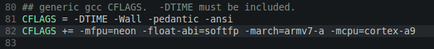

1.背景说明
许多公司有很多不同的ARM SoC的研发产品,ARM核心可能有Cortex-A8/A9/A15，核心数可能有单核双核和四核.现在,几乎每出一款手机,网络上马上就有人对其评测.对比和评测不同ARM SoC 芯片以及嵌入式系统是非常有必要的;通过不同的SoC和其运行的OS对比,可以帮助我们了解我们产品的性能，并根据测试得知系统的瓶颈、找出需要改善的方面。
嵌入式产品的硬件一般都是由处理器、主存、存储器、显示设备、以及其他外设组成。嵌入式产品的软件方面，一般都选用嵌入式系统，如小的RTOS，如VxWorks、μC/OS-III、RTT、DJYOS、FreeRTOSLinux，或者是更复杂的Linux、Android、WinCE。评测和对比的内容一般也主要由软件和硬件这两个方面组成。
2.预备基础知识
如果只是对Andorid系统或者是WinCE相关系统评测，那么我们完全可以下载一些应用（安装）运行即可评测。而如果要评测的嵌入式系统是基于Linux自己定制的甚至没有GUI的，则很可能需要我们下载源代码编译。因此对基础的编译知识的了解必不可少①。编译配置又与ARM SoC构架相关，所以需要了解一下与ARM构架以及有关的交叉编译的选项，比较ARM SoC种类较少，所以这类问题变得很简单了，一般我们需要根据需要配置-mfpu和-march以及-mfloat-abi，以及编译优化选项。
3.评测工具介绍
评测工具有很多，在这个网页列出了几十个工具。单单系统性评测工具就有7个。那什么是系统性的BenchMark（引用自unixbench）：
Do be aware that this is a system benchmark, not a CPU, RAM or disk benchmark. The results will depend not only on your hardware, but on your operating system, libraries, and even compiler.
系统测试
用得比较广的系统性测试工具：
- lmbench④
- UnixBench
这两个BenchMark软件，本身是给PC上的Linux上用的，为了给嵌入式开发板子使用，需要交叉编译。和其他嵌入式程序编译一样，一般Makefile要改的只有两个地方：
- CC：指定为嵌入式交叉编译器
- CFLAGS：需要根据目标板ARM芯片配置②
一些单项测试工具：
将系统测试里面的每个测试项拆开就成了单项测试，一般分为计算性能③，内存性能，图形显示。
有一点需要说明的是：在linux启动过程中会打印BogoMIPS不一定准确。这方面可以参考ARM官方的说明，使用Dhrystone，当然现在在计算能力测试方面，现在大家可能更认可CoreMark和CPU2006，而不是Dhrystone。
一些外设的测试：
SD/eMMC可以使用dd命令来测试，例如一个读写的测试命令示例：
Read： sync && date && dd if=/dev/block/mmcblk0 of=/dev/null bs=4094 count=40960 && sync && date
Write：sync && date && dd of=/dev/block/mmcblk0 if=/dev/zero bs=4094 count=40960 && sync && date
使用date只能精确到秒，但是使用time命令可以精确到0.01S，所以用time更好，但是time只接受一个process作为参数。因此，需要将dd与sync整条命令放入到脚本中，再用time来运行这个脚本。
4.测试结果分析
如果就拿单单一个光秃秃的数据来看，会显得有些空白，所以一般用不同的板子数据进行对比来看。在lmbench中，就可以将测试结果拷贝到result中的对应OS目录中，再用make see，产生summary.out文件。其他的测试软件也有类似的功能，对于测试结果，我们需要做的是通过分析测试结果找到系统中性能与理论相差太大的不正常项目，然后去分析可能的原因并寻求解决之道。
①可以看AnTuTu and Intel这篇文章，里面提到了安兔兔对ICC编译器对Intel处理器的优化，ARM这边却连neon也没有使用。同时另一篇文章说到了安兔兔在版本变高后，评分下降的issue。
②关于编译选项，可以man gcc，搜索对应的选项来查看详细内容。给出一个CLFAGS示例：

其中这些参数可以在kernel启动后使用cat /proc/cpuinfo查看Arch架构。
③关于计算方面的测试，有一个不错的文档ARM Cortex-A8 vs. Intel Atom：，里面介绍了4中测试Integer和Float的工具，并用这些工具对Atom和Beagle Bone板子进行的测试比较和说明。另外Keil的这个网页上对这些测试程序和Item也有一些介绍。
④编译与运行可以参考这个网页的文章，需要根据直接的板子SoC更改CFLAGS。
Comments !